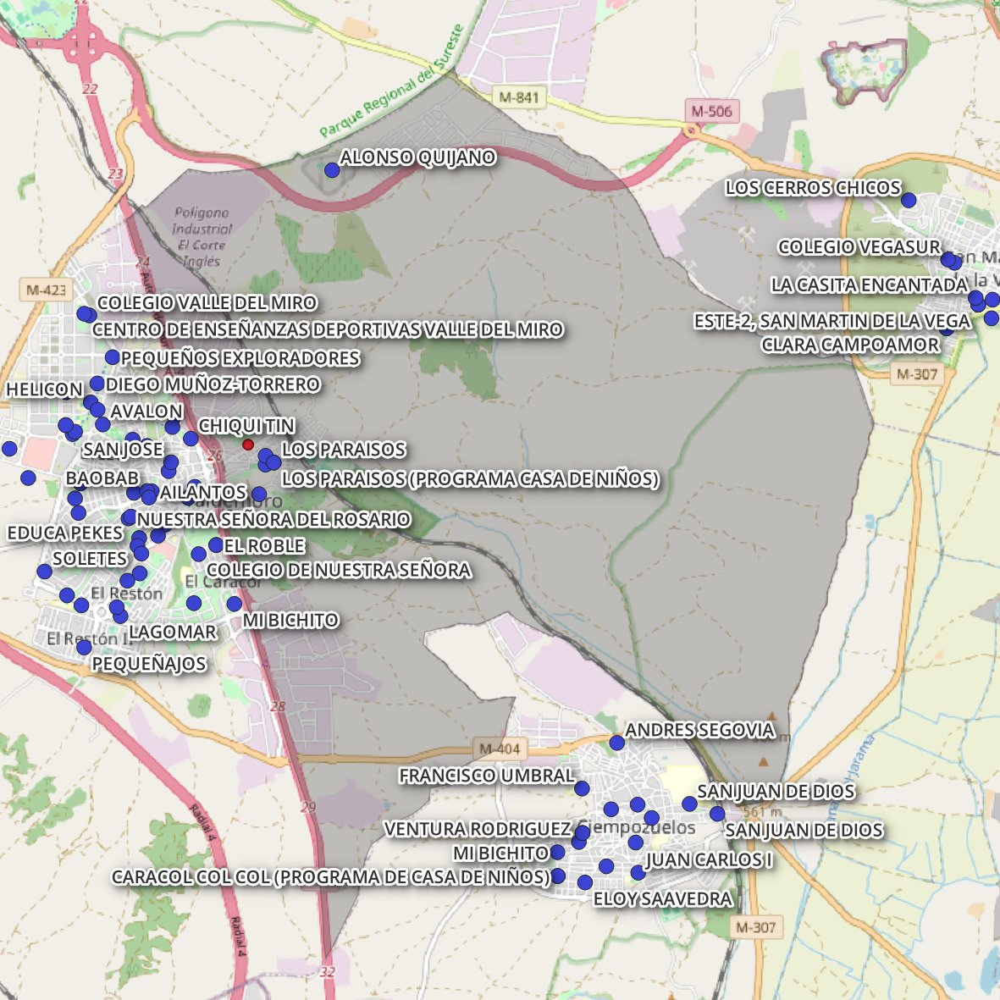

Puntos de interés en el territorio parroquial
Parroquia Santiago Apóstol (Valdemoro) · Arciprestazgo de Valdemoro
Entidades religiosas no católicas
No hay ninguna entidad religiosa no católica en el territorio de esta parroquia.
Centros educativos

5 centros educativos en el territorio de la parroquia (público: 5).
| Centro | Tipo | Titularidad | Domicilio | Web |
|---|---|---|---|---|
| ALONSO QUIJANO | Centro público de educación adultos establecimientos penitenciarios | Público | Carretera Pinto- San Martín de la Vega, k 5, 28340 Valdemoro | Página web |
| CRISTO DE LA SALUD | Colegio de educación infantil y primaria | Público | Paseo del Prado, 28, 28343 Valdemoro | Página web |
| FUENTE DE LA VILLA | Colegio de educación infantil y primaria | Público | Ronda de San Sebastián, s/n, 28343 Valdemoro | Página web |
| LOS PARAISOS | Escuela infantil | Público | Paseo del Prado, s/n, 28343 Valdemoro | Página web |
| NEIL ARMSTRONG | Instituto de educación secundaria | Público | Ronda SAN SEBASTIAN, 10, 28341 Valdemoro | Página web |
Fuente: registro de centros educativos de la Comunidad de Madrid. Solo se recogen los centros de alta.